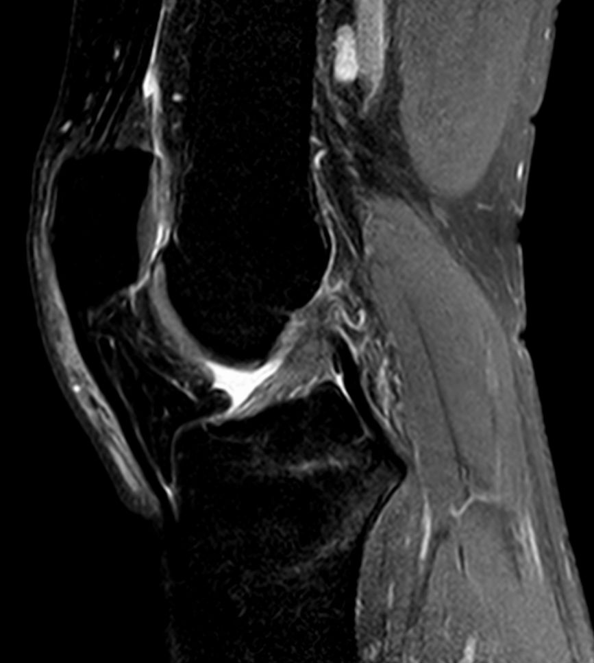

Ficha del catálogo
Rotura del ligamento cruzado anterior
- Sistema
- Óseo
- Modalidad
- RM
- Región
- Rodilla
- Dificultad
- Intermedio
Lesión ligamentaria frecuente en deportes de pivote, producida por un mecanismo de valgo y rotación con el pie fijo. Provoca hemartros inmediato y sensación de inestabilidad. Suele asociarse a lesiones meniscales y a contusiones óseas de patrón muy característico.
Técnica
Resonancia de rodilla en los tres planos, valorando el ligamento en el plano sagital oblicuo y confirmando en coronal y axial.
Qué observar
- Discontinuidad de las fibras del ligamento con señal alta y contorno ondulado
- Orientación horizontalizada del ligamento respecto a la línea de Blumensaat
- Contusiones óseas en el cóndilo femoral externo y en la meseta tibial posterolateral
- Desplazamiento anterior de la tibia respecto al fémur
- Fractura por avulsión del reborde tibial lateral en el mecanismo rotacional
- Lesiones asociadas de menisco interno y de ligamento colateral medial
Hallazgos
Ligamento cruzado anterior con fibras discontinuas y señal aumentada, acompañado de contusiones óseas típicas y hemartros.
Perlas
El patrón de contusión ósea en el cóndilo femoral externo y la meseta tibial posterolateral es tan característico que permite sospechar la rotura incluso cuando el ligamento es difícil de valorar por el edema.
Diagnóstico diferencial
- Rotura del ligamento cruzado posterior
- Engrosamiento y discontinuidad del ligamento posterior con desplazamiento tibial posterior.
- Esguince del colateral medial
- Edema periligamentario medial con cruzado íntegro.
- Luxación rotuliana transitoria
- Contusiones en rótula medial y cóndilo femoral externo anterior.
Simuladores
- Ligamento parcialmente volumétrico por corte oblicuo
- Fibras intactas ocultas por hemartros
- Cicatriz de reconstrucción previa
Por modalidad
- RM
- Técnica de elección para ligamentos y lesiones asociadas
- RX
- Detecta avulsiones óseas y descarta fracturas
- US
- Papel muy limitado en ligamentos intraarticulares
Protocolo
Resonancia con secuencias densidad protónica y con supresión grasa en los tres planos, orientando el plano sagital al eje del ligamento.
Clasificación
Errores frecuentes
- Valorar el ligamento en un solo plano
- Pasar por alto la lesión meniscal asociada
- Confundir edema difuso con rotura completa sin comprobar la continuidad de fibras

cruzado anterior rodilla contusion osea deporte hemartros inestabilidad resonancia